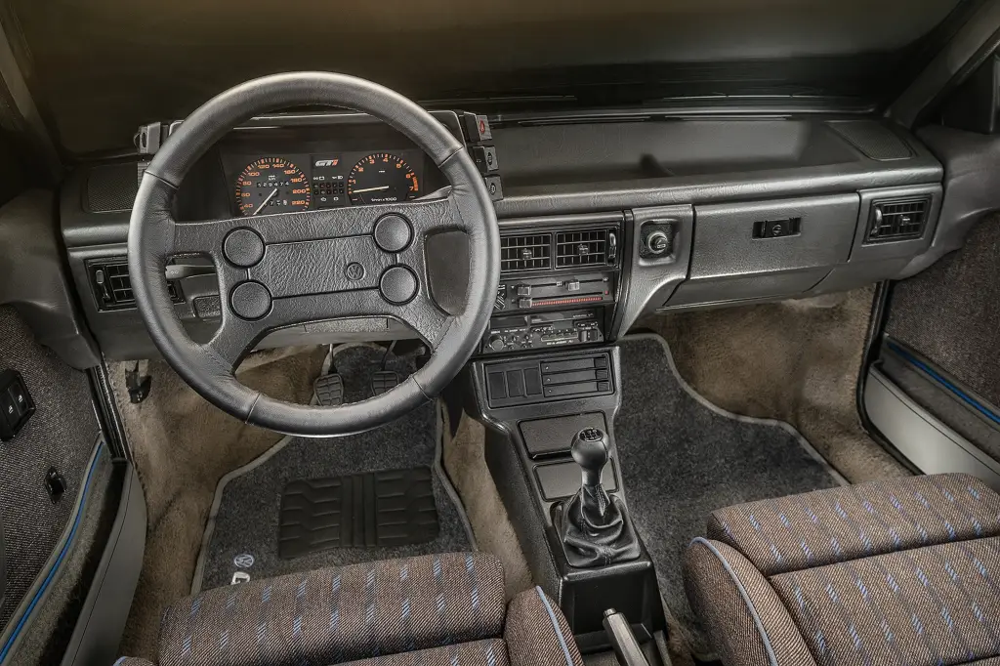
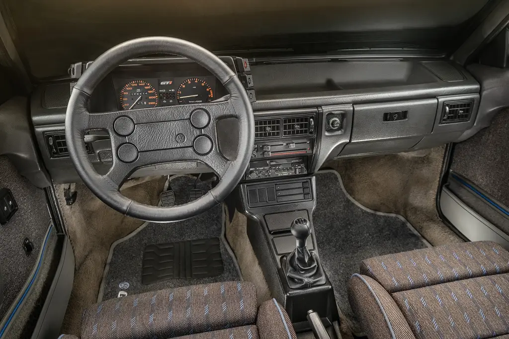

Historia
O Gol GTI foi lançado no Brasil em 1988 e rapidamente se tornou um marco na indústria automotiva nacional. Naquela época, o mercado brasileiro tinha poucos carros realmente esportivos, e a maioria ainda usava carburador, tecnologia já considerada ultrapassada no exterior.
O grande diferencial do Gol GTI foi ser o primeiro carro nacional equipado com injeção eletrônica, algo extremamente moderno para o Brasil no final dos anos 80. Essa tecnologia trouxe mais potência, melhor desempenho e funcionamento mais preciso do motor, colocando o GTI muito à frente dos concorrentes.Equipado com o famoso motor AP 2.0, o Gol GTI entregava cerca de 120 cavalos de potência, números impressionantes para a época. Seu desempenho também chamava atenção: aceleração forte, boa velocidade final e comportamento esportivo, fazendo dele o carro mais rápido produzido no Brasil naquele período.
Além da mecânica, o Gol GTI também inovou no visual e no interior. Ele trazia:
- Rodas exclusivas
- Bancos esportivos Recaro (em algumas versões)
- Volante esportivo
- digital, algo raríssimo nos carros nacionais da época
O público-alvo do Gol GTI eram jovens e entusiastas, pessoas que buscavam desempenho e status. Ter um GTI nos anos 80 e 90 era sinal de modernidade e bom gosto, e o carro virou rapidamente objeto de desejo.
Com o passar dos anos, o Gol GTI deixou de ser produzido, mas seu legado permaneceu. Hoje, o Gol GTI quadrado é considerado um clássico brasileiro, extremamente valorizado entre colecionadores e apaixonados por carros antigos, sendo lembrado como um dos esportivos mais importantes da história do Brasil.
Ficha Técnica – Gol GTI
| Motor | AP 2.0 |
|---|---|
| Combustível | Gasolina |
| Potência | 120 cv |
| Torque | 18,4 kgfm |
| Câmbio | Manual de 5 marchas |
| Tração | Dianteira |
| 0–100 km/h | ≈ 9 segundos |
| Velocidade Máxima | ≈ 190 km/h |
Curiosidades
- Primeiro carro nacional com injeção eletrônica
- Velocímetro digital
- Objeto de desejo até hoje
- Foi o carro nacional mais rápido do Brasil no final dos anos 80.
- Usava injeção eletrônica Bosch LE-Jetronic, tecnologia muito avançada para a época.
- Tinha painel digital, algo raríssimo nos carros nacionais daquele período.
- A sigla GTI significa Gran Turismo Injeção.
- O ronco do motor AP 2.0 virou uma marca registrada do modelo.
- Muitas unidades vinham com bancos Recaro, item de luxo na época.
- Era um dos carros mais caros da Volkswagen no Brasil quando foi lançado.
- Virou símbolo de status entre os jovens nos anos 80 e 90.
- Compartilhava várias peças com outros modelos VW, o que facilita manutenção até hoje.
- Hoje é um clássico valorizado, com unidades bem conservadas custando valores altos.
- Foi referência de desempenho para carros nacionais por vários anos.
- Foi totalmente desenvolvido e adaptado para o mercado brasileiro.
- É um dos carros nacionais mais usados em preparações e projetos.
- É um dos carros nacionais mais usados em preparações e projetos.
- É considerado por muitos o primeiro esportivo moderno do Brasil.
Galeria


 
